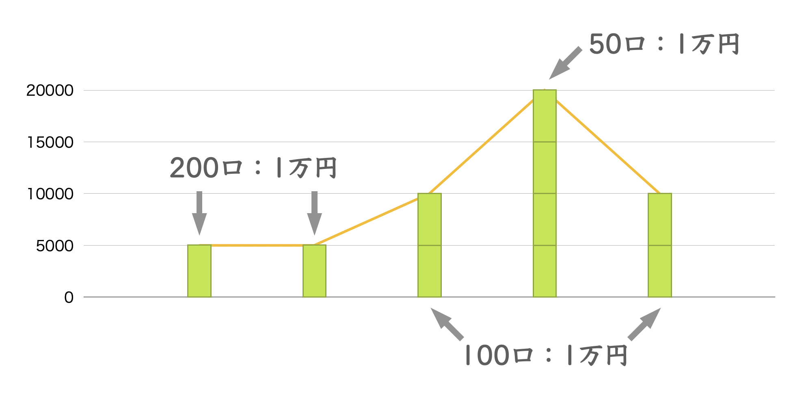
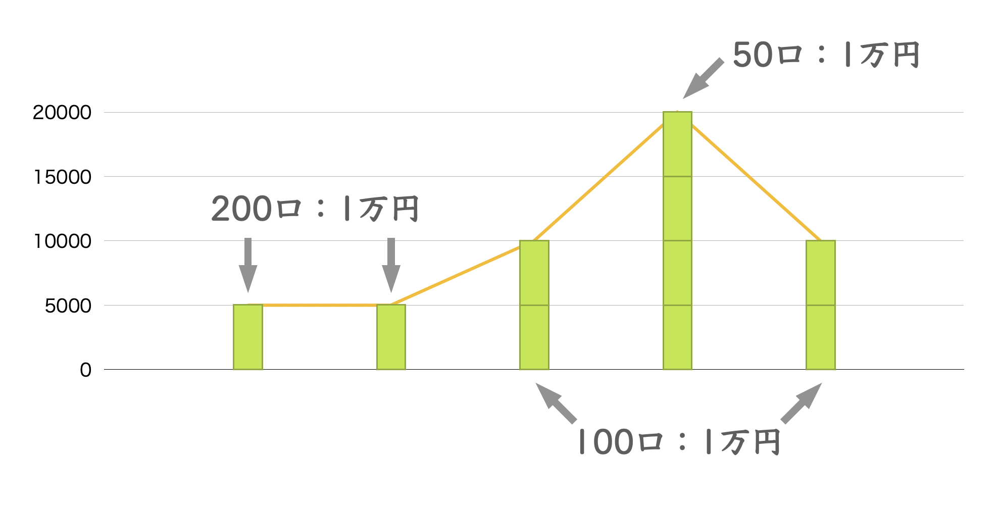

長期投資をすべき理由
この記事内の株式投資は、投資信託やETFの意味も含みます
短期投資をするなという意味ではありません
長期投資する投資先は優良な投資先（長期に渡って成長が期待できること）を前提としています
紹介している投資方法や投資対象は、利益を保証するものではありません
場合によっては、損失を被ることもありますので投資判断はご自身でお願いいたします
分配金を再投資し続けることで、指数関数的に資産が増加していきます

縦軸に資産額、横軸に時間をとったグラフで表すと、グラフの右にいくほど資産の増加率が上昇していきます
つまり時間をかければかけるほど資産の増え方も大きくなります
例えば年平均リターンが6%であれば、72の法則により12年後に資産はおよそ2倍となります
さらにそのまま同じ条件でそこから12年間運用し続けると最初の資産の4倍になる計算です
この時、最初の12年間の増加分と後の12年間の増加分を比較した場合、その増加分は後の12年間の方が2倍多くなります
条件が同じであれば、時間が経過するほど時間あたりの増加率が上昇していくことを伝えたかったのです
簡単にマイナスサムゲームを説明すると、みんなが出したお金の平均が、みんなが受け取るお金の平均を下回ることです
あくまで平均なのでその中には得する人と損する人が存在しますが、出したお金の合計より受け取るお金の合計の方が少ないのだから自分自身が損する人になる可能性は十分にありますよね

ゼロサムゲームは、みんなが出したお金の平均が、みんなが受け取るお金の平均と同額になることです
一般的にギャンブルはマイナスサムゲームになるような構造なので、利益を奪い会うことになります
つまり株式投資も期間が短くなるほど、投資という側面よりもギャンブルに近いものになっていきます

株式を長期投資するとプラスサムゲームとなる可能性が高いのは、上述の複利によるパワーが大きな要因でしょう
もちろん長期投資しても100%、絶対にプラスサムゲームになるかと聞かれてもその可能性は高いかもしれませんが、答えは誰にもわかりません
もしそんな文言があれば誤りか、もしくは悪意が込められているので要注意です
保証はできませんが、世界の経済が成長し続ける限りは長期投資で、時間をかけるほどプラスサムゲームに近づくと考えられます
相場の良い時も悪い時も積み立て期間で平均して投資をすることができるので、運の要素をできるだけ抑えた運用ができるとされています


一括購入は相場の状況によってプラスサムゲームが成立するまでの期間に幅ができてしまいます
一例ですが、一括購入で上手く仕込むことができれば5年で2倍にできるかもしれませんが、仕込み方が悪ければ20年で2倍のパフォーマンスとなるかもしれません
私はプラスサムゲームが成立すると信じているので、最終的には元金よりも増加していることを期待して株式を購入しています
時間はかかるかもしれませんが、相場の高い時に一括で購入してしまったとしても、
プラスサムゲームが維持される限りは複利の力により元金よりも増えている可能性が高いと思っています
つまり最終的には一括であろうと積み立てであろうと時間さえかければ資産は増加しているだろうと考えています
ただ、大切な資金ではあるのでそのパフォーマンスが運に左右されてしまうのはあまり心地よいものではありませんよね
だからその時間的な運の要素をできるだけ排除しようとした考えが、時間的な分散投資（ドルコスト平均法）になります
ここまで長期投資のメリットを挙げてきましたが、長期投資にもデメリットがあります
その中で最大のデメリットは資金が拘束されてしまうことです
長期で投資しているのだから当たり前ですよね
複利のパワーを使うと言うことは、お金を貸す代わりにありがとうとしてお金をもらうと言うことなので、返してもらうまではそのお金を使うことはできません
つまり長期に渡って投資し続けることは、少し乱暴ではありますが、その期間に自分がお金を使う権利を放棄していることを意味します
今、お金を使えないことで手に入るはずだった物や経験を手に入れることができないかもしれない
お金を使えないからといってまったくの不自由というわけではないですが、やはり多少の制限はかかるような気はしています
投資をするかしないかや投資に費やす額については個人の価値観だとは思います。
私は今の不自由かそれとも将来の自由のどちらを重視するかというバランスをよく考えています
長期で見ればメリットがあると考えられるものの、今この瞬間に使うことができずにこの世を去ることもあり得ます（老若男女問わず）
おそらくお金はあの世では使えないので、この世に生きている間に有意義な使い方ができればいいですね
今と未来のバランスをよく考えて幸せに生きていけたらいいですね
今と未来のバランスを考えるきっかけはFIREでした
FIREについては以下の記事にまとめています↓
2022/02/18
短期投資をするなという意味ではありません
長期投資する投資先は優良な投資先（長期に渡って成長が期待できること）を前提としています
紹介している投資方法や投資対象は、利益を保証するものではありません
場合によっては、損失を被ることもありますので投資判断はご自身でお願いいたします
結論
長期投資すべき理由として以下の3つについて考えてみました- 複利（効果）
- プラスサムゲーム
- 時間的な分散投資
複利（効果）
長期に渡って投資し続ける最大の理由は複利の力を引き出すことにあります分配金を再投資し続けることで、指数関数的に資産が増加していきます
縦軸に資産額、横軸に時間をとったグラフで表すと、グラフの右にいくほど資産の増加率が上昇していきます
つまり時間をかければかけるほど資産の増え方も大きくなります
例えば年平均リターンが6%であれば、72の法則により12年後に資産はおよそ2倍となります
さらにそのまま同じ条件でそこから12年間運用し続けると最初の資産の4倍になる計算です
この時、最初の12年間の増加分と後の12年間の増加分を比較した場合、その増加分は後の12年間の方が2倍多くなります
条件が同じであれば、時間が経過するほど時間あたりの増加率が上昇していくことを伝えたかったのです
プラスサムゲーム
投資期間が短ければ短いほど、相場は投資家心理によってランダムに動くとされているので、マイナスサムゲームやゼロサムゲームになる可能性が高くなります簡単にマイナスサムゲームを説明すると、みんなが出したお金の平均が、みんなが受け取るお金の平均を下回ることです
あくまで平均なのでその中には得する人と損する人が存在しますが、出したお金の合計より受け取るお金の合計の方が少ないのだから自分自身が損する人になる可能性は十分にありますよね
ゼロサムゲームは、みんなが出したお金の平均が、みんなが受け取るお金の平均と同額になることです
一般的にギャンブルはマイナスサムゲームになるような構造なので、利益を奪い会うことになります
つまり株式投資も期間が短くなるほど、投資という側面よりもギャンブルに近いものになっていきます
株式を長期投資するとプラスサムゲームとなる可能性が高いのは、上述の複利によるパワーが大きな要因でしょう
もちろん長期投資しても100%、絶対にプラスサムゲームになるかと聞かれてもその可能性は高いかもしれませんが、答えは誰にもわかりません
もしそんな文言があれば誤りか、もしくは悪意が込められているので要注意です
保証はできませんが、世界の経済が成長し続ける限りは長期投資で、時間をかけるほどプラスサムゲームに近づくと考えられます
時間的な分散投資
長期に渡って投資（定額の積み立て）をし続けることで、相場が悪い時には安値で多く購入することができ、相場が良い時には高値で少し購入することができます いわゆるドルコスト平均法と呼ばれるやつですね相場の良い時も悪い時も積み立て期間で平均して投資をすることができるので、運の要素をできるだけ抑えた運用ができるとされています

一括購入は相場の状況によってプラスサムゲームが成立するまでの期間に幅ができてしまいます
一例ですが、一括購入で上手く仕込むことができれば5年で2倍にできるかもしれませんが、仕込み方が悪ければ20年で2倍のパフォーマンスとなるかもしれません
私はプラスサムゲームが成立すると信じているので、最終的には元金よりも増加していることを期待して株式を購入しています
時間はかかるかもしれませんが、相場の高い時に一括で購入してしまったとしても、
プラスサムゲームが維持される限りは複利の力により元金よりも増えている可能性が高いと思っています
つまり最終的には一括であろうと積み立てであろうと時間さえかければ資産は増加しているだろうと考えています
ただ、大切な資金ではあるのでそのパフォーマンスが運に左右されてしまうのはあまり心地よいものではありませんよね
だからその時間的な運の要素をできるだけ排除しようとした考えが、時間的な分散投資（ドルコスト平均法）になります
長期投資のデメリット
ここまで長期投資のメリットを挙げてきましたが、長期投資にもデメリットがあります
その中で最大のデメリットは資金が拘束されてしまうことです
長期で投資しているのだから当たり前ですよね
複利のパワーを使うと言うことは、お金を貸す代わりにありがとうとしてお金をもらうと言うことなので、返してもらうまではそのお金を使うことはできません
つまり長期に渡って投資し続けることは、少し乱暴ではありますが、その期間に自分がお金を使う権利を放棄していることを意味します
今、お金を使えないことで手に入るはずだった物や経験を手に入れることができないかもしれない
お金を使えないからといってまったくの不自由というわけではないですが、やはり多少の制限はかかるような気はしています
投資をするかしないかや投資に費やす額については個人の価値観だとは思います。
私は今の不自由かそれとも将来の自由のどちらを重視するかというバランスをよく考えています
長期で見ればメリットがあると考えられるものの、今この瞬間に使うことができずにこの世を去ることもあり得ます（老若男女問わず）
おそらくお金はあの世では使えないので、この世に生きている間に有意義な使い方ができればいいですね
今と未来のバランスをよく考えて幸せに生きていけたらいいですね
今と未来のバランスを考えるきっかけはFIREでした
FIREについては以下の記事にまとめています↓
この記事が私の弟やあなたの役に立ちますように
記事内容に誤りなどがございましたら、
Twitterなどで優しくお知らせいただけると幸いです
2022/02/18